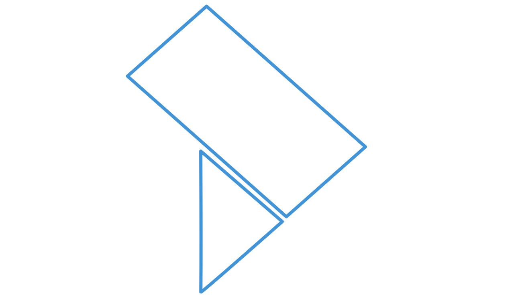
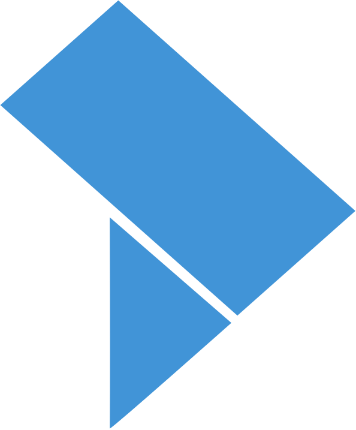

La Traccia GepaDial · Ambulatorio AI
Nefrologia · Ambulatorio
Rev. 02 · Ottobre 2026
Più tempo al paziente,
meno alla tastiera
Ambulatorio AI è il modulo di GepaDial che ascolta la visita nefrologica, la trascrive e prepara il referto per la firma. Mentre il medico parla con il paziente, il sistema compila le sezioni, segnala allergie e dosaggi, calcola gli score. I modelli, addestrati sulla nefrologia, risiedono nell'azienda ospedaliera. La decisione resta del medico.
Trascrizione in tempo reale
Avvisi clinici
Modelli on-premise
FSE 2.0

01
Contesto
Allergie, terapie, esami e ultime visite già in vista
02
Visita
Il medico parla; il sistema trascrive e compila
03
Validazione
Avvisi accettati o ignorati, sezioni corrette
04
Firma
Referto CDA2 al repository e al FSE
Nefrologia
HL7 CDA2
KFRE · eGFR
Italiano
Audio: 0 s